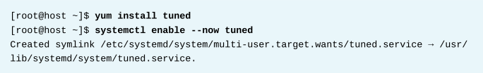

第三章 调优系统性能
目标：
- 通过设置调优参数和调整进程的调度优先级来提高系统性能。
章节：
- 调整调优配置文件
- 影响进程调度
第一节：调整调优配置文件
目标：
- 完成本节后，学生应该能通过选择tuned的调优配置文件来优化系统性能。
系统调优：
- 管理员可以基于多种工作负载特征来调整各种设置，以此优化系统性能。
- tuned守护进程使用反映特定工作负载特征的调优配置文件，以静态和动态两种方式进行调优。
- 配置静态调优：static tuning
1. tuned守护进程会在服务启动时或选择新的调优配置文件时应用系统设置。
2. 静态调优会对配置文件中由tuned在运行时应用的预定义kernel参数进行配置。
3. 对于静态调优而言，内核参数是针对整体性能预期而设置的，不会随着活跃度的变化而
进行调整。
- 配置动态调优：dynamic tuning
1. 对于动态调优而言，tuned守护进程会监视系统活动，并根据运行时行为的变化来调整设置。
2. 从所选调优配置文件中声明的初始设置开始，动态调优会不断进行调优调整以适应当前工作
负载。
3. 如，存储设备在启动和登录期间的使用率会比较高，但如果用户工作负载的内容是使用Web
浏览器和电子邮件客户端，则活动量会很少。
4. 同样，CPU和网络设备在整个工作日的高峰使用期间会出现活动增加的情况。
5. tuned守护进程会监视这些组件的活动并调整参数设置，以最大限度提升高活动量期间的
性能，并在低活动量期间降低设置值。
6. tuned守护进程将使用预定义调优配置文件中提供的性能参数。
安装与启用tuned：
- 默认情况下，RHEL 8的最小安装中包含并启用了 tuned 软件包。
- 手动安装并启用该软件包：

选择调优配置文件：tuning profile
- tuned应用提供的配置文件分为以下类别：
1. 节能型配置文件（power-saving profiles）
2. 性能提升型配置文件（performance-boosting profiles）
- 性能提升型配置文件中包括侧重于以下方面：
1. 存储和网络的低延迟（low latency for storage and network）
2. 存储和网络的高吞吐量（high throughput for storage and network）
3. 虚拟机性能（virtual machine performance）
4. 虚拟化主机性能（virtualization host performance）

从命令行管理配置文件：
- tuned-adm命令用于更改tuned守护进程的设置。
- tuned-adm常用命令示例：
$ tuned-adm active
# 查看当前活动的调优配置文件

$ tuned-adm list
# 列出当前可用的调优配置文件
# 该结果中包括内置的与系统管理员创建的自定义调优配置文件

$ tuned-adm profile <profile_name>
# 切换不同的调优配置文件
# 系统在同一时刻只能指定唯一的调优配置文件

$ tuned-adm recommend
# 为系统推荐调优配置文件

$ tuned-adm off
# 关闭tuned调优活动

通过Web Console管理配置文件：
- 要通过Web Console管理系统性能配置文件，需使用具有特权的访问权限登录。
- 只有能正确提权为root权限的用户（sudo列表或wheel组），才能单击 Reuse my password
for privileged tasks 选项，修改系统性能配置文件的命令。

* 注意：
1. wheel组中的用户，或在系统sudo列表中能免密（NOPASSWD）提升为root权限的用户，
才能使用以上选项在Web Console中执行系统管理员操作。
2. 无法正确提权为root权限的用户，即使使用以上选项，依然不能执行系统管理员操作！
3. 在sudo列表中只能部分免密的用户也不能执行管理员操作。

- 以特权用户的身份单击左侧导航栏中的 Systems 菜单选项。
- 当前活动的配置文件将显示在 Performance Profile 字段中。
- 要选择其他配置文件，单击活动配置文件链接。

- 在 Change Performance Profile 界面中，滚动配置文件列表以选择最适合系统用途的配置文件。

- 验证更改，返回主 System 页面并确认 Performance Profile 字段中是否显示活动的配置文件。

* 注意：
RHEL 8中可使用Cockpit的Web Console实现系统管理，该服务监听9090端口。

练习 P73：ADJUSTING TUNING PROFILES
第二节：影响进程调度
目标：
- 完成本节后，学生应该能通过nice和renice命令对特定进程进行优先排序或取消其优先排序。
Linux进程调度和多任务：process scheduling
- 现代计算机系统有一个共同点，即需要运行的进程及线程数量超出了其CPU数量。
- 通过使用称为时间片（time-slicing）或多任务（multitasking）的技术，Linux和其他
操作系统可运行超出其处理单元数的进程。
- 操作系统进程调度程序在单个核心上的进程之间快速切换，从而给人一种有多个进程在同时
运行的印象。
相对优先级：relative priorities
- 可以设置针对不同的进程，采用不同的调度策略。
- 系统上运行的大多数进程所使用的调度策略（scheduling policies）称为 SCHED_OTHER
（也称为 SCHED_NORMAL）。
- 可为采用SCHED_NORMAL策略运行的进程指定相对优先级，优先级称为 nice 值。
- 对于任何进程，有 40 种不同级别的 nice 值可以设置。
- nice值的范围介于 -20（最高优先级）到 19（最低优先级）之间。
- 默认情况下，进程将继承其父进程的nice值，通常为 0。
- nice值越高，表示优先级越低（该进程容易将其CPU使用量让给其他进程）。
- nice值越低，表示优先级越高（该进程更加不倾向于让出CPU）。
- 如果不存在资源争用，如当活动进程数少于可用CPU核心数时，即使nice值高的进程也将仍
使用尽可能多CPU资源。
设置nice值和权限：
- 只有root用户可以降低进程的nice值（提高优先级）。
- 普通用户的权限仅限于提高自己进程的nice值，不能降低自己进程的nice值。
使用top查看nice值：
- top命令可通过交互方式查看和管理进程，可以查看nice值（NI）和 priority 值（PR）。
- nice值 -20 映射至 PR 值 0。

通过命令显示nice值：
- ps命令可显示进程的nice值。
- 以下ps命令列出所有进程，包括其PID、进程名称、nice级别和调度类型，按nice降序排列。
- 在CLS调度类型这一列中显示TS的进程将依照 SCHED_NORMAL 调度策略运行。
- nice显示为短划线（-）的进程将依照其他调度策略运行，具有较高的优先级。

启动具有不同nice值的进程：
- 在进程创建过程中，进程会继承父级nice值。
- 从命令行启动进程时，进程将从启动它的shell进程那里继承nice值，通常nice值为 0。

- 所有用户都可以使用 nice 命令来启动具有默认或更高nice值的命令，默认为 10。
- -n 选项可以设置特定nice值。
$ nice -n <num> <command>：指定nice级别创建新进程

更改现有进程的nice级别：
- 使用 renice 命令来更改现有进程的nice级别。
- $ renice -n <num> <pid>：指定nice级别更改现有进程

- 也可以使用top命令更改进程的nice级别。
- 在top交互式界面中，按 r 键以访问 renice 命令，后跟要更改的PID和新的nice级别。
练习 P79：INFLUENCING PROCESS SCHEDULING
Lab P83：TUNING SYSTEM PERFORMANCE